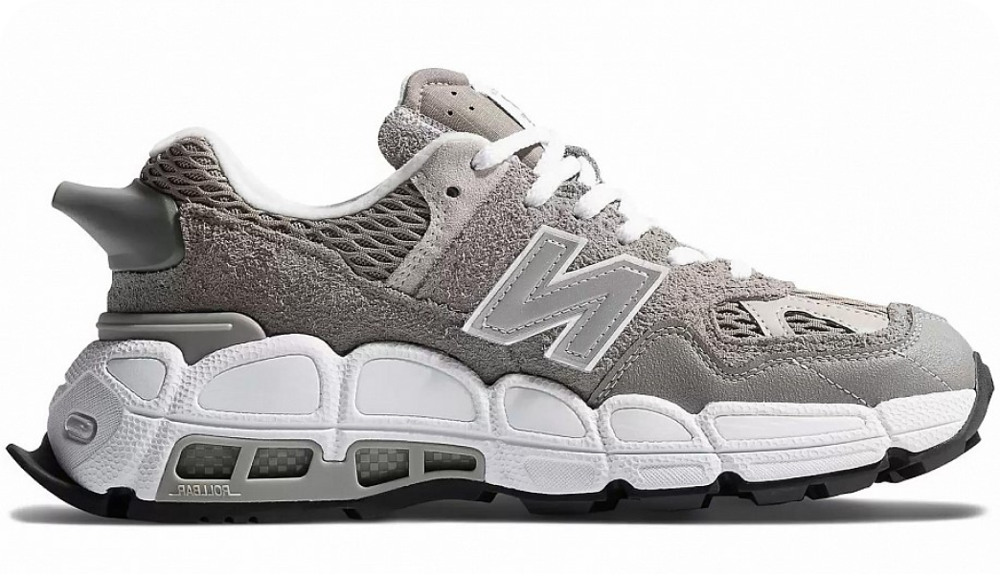

The New Balance C-ms574
Salehe Bembury Shark Skin
Компания New Balance изначально занималась производством стель и ортопедической обуви в начале
20-го века в Бостоне, США. Сегодня, New Balance — это мировой бренд, производящий спортивную одежду и обувь для активного отдыха и спорта. Кроссовки New Balance отличаются удобством, стабильностью, качеством и современным дизайном.
Благодаря технологиям, таким как Encap и Abzorb, обувь этого бренда обеспечивает оптимальную амортизацию и поддержку стопы, делая её популярной среди спортсменов и любителей активного образа жизни. Кроме этого, New Balance заботится о внешнем виде своей продукции, предлагая разнообразие моделей и цветовых решений, от классических до ярких и стильных.
Кроссовки New Balance предназначены для различных видов деятельности: бега, ходьбы, тренировок в зале и повседневной носки. Они сочетают в себе комфорт и функциональность, а также удовлетворяют потребности как профессиональных спортсменов, так и любителей спорта. Благодаря широкому ассортименту, каждый может выбрать подходящую для себя модель.
О кроссах
Дата выхода
02/12/2023
Розничная цена
250€
Материалы
Замша 100%, резина
О кроссах
Дата выхода
10/03/2020
Розничная цена
251€
Материалы
Кожа 100%, резина
Тебе понравится:

Nike Dunk Low SP
Syracuse

Converse Chuck 70 High
Comme des Garcons PLAY Black